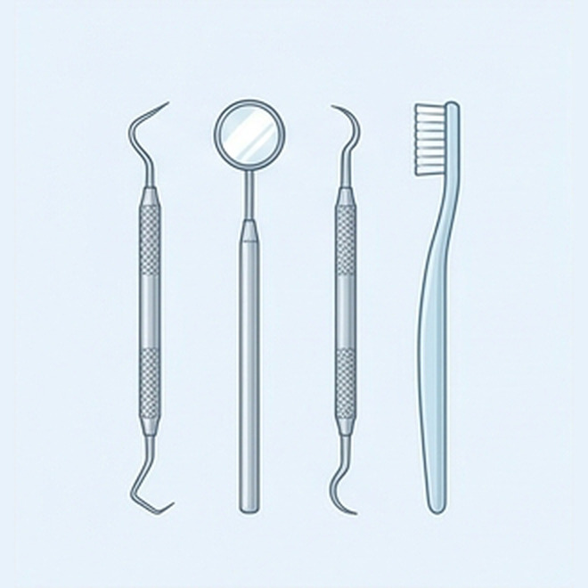
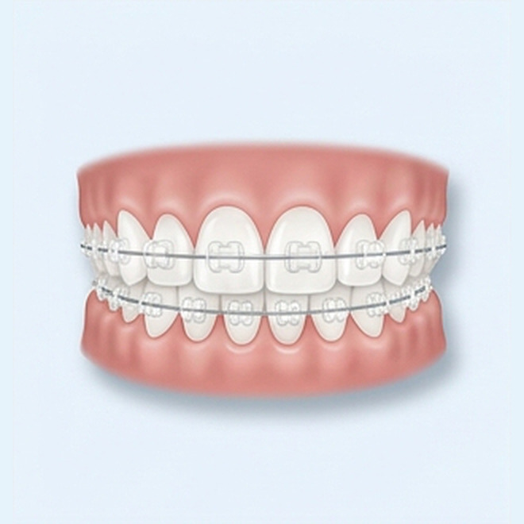
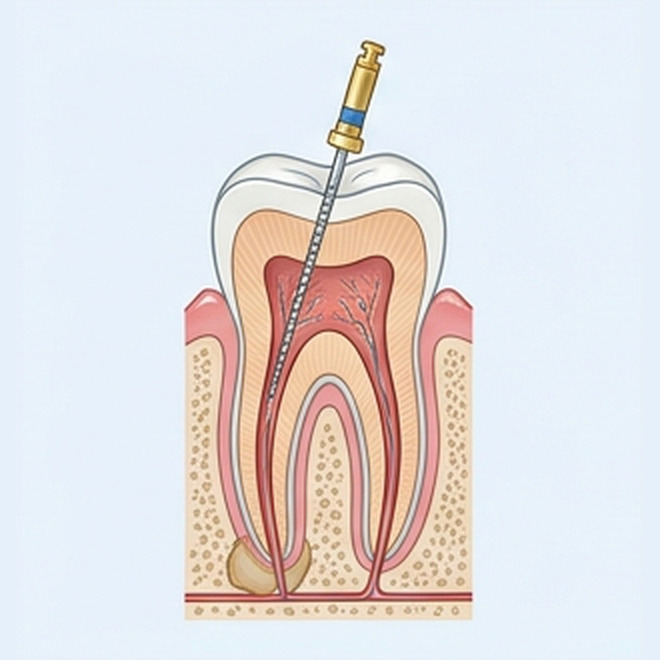
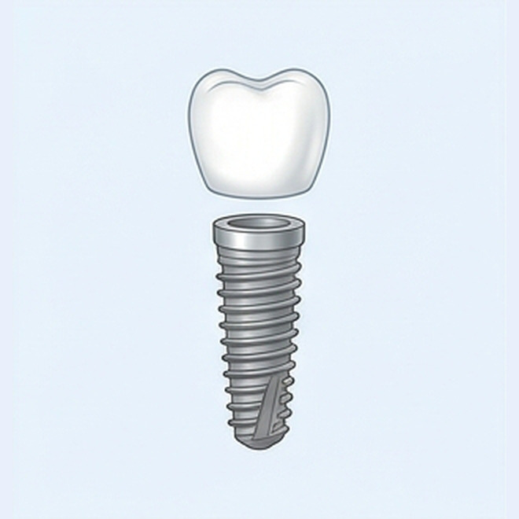
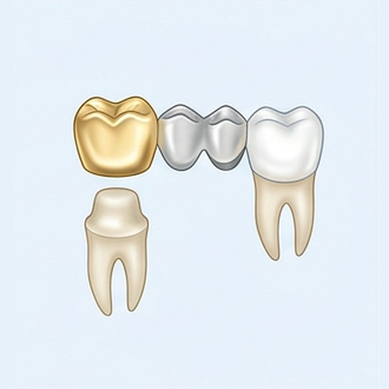
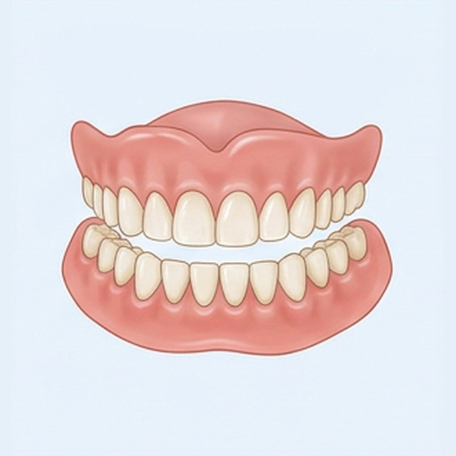

What we treat, what each visit involves, and what to expect afterwards.

The routine care that keeps everything else from becoming a bigger job — check-ups, cleaning, fillings and early warnings when something is starting to go wrong.
Examination, scaling and polishing, digital X-rays when they are needed, and simple fillings.
Most patients come every six months. We will tell you if your teeth need to be seen sooner.
Nervous patients are welcome. Say so when you book and we will allow extra time.
From $45 · see the fees calculator

Straightening teeth either with fixed braces or with clear removable aligners. Which one suits you depends on how far the teeth need to move, not on preference alone.
Removable, close to invisible, and taken out to eat. Best for mild to moderate crowding.
Metal or ceramic brackets. Slower to get used to, but they handle bigger corrections.
Typically 6 to 24 months. You will get an estimate after the first scan.
From $5,500 · see the fees calculator

When decay or injury reaches the nerve inside a tooth, a root canal clears the infection and saves the tooth — the alternative is usually taking it out.
The infected pulp is removed, the canal is cleaned and sealed, and the tooth is rebuilt.
The tooth is fully numbed. Most patients say it feels much like having a filling.
A crown is often recommended, since a treated tooth becomes more brittle over time.
From $1,100 · see the fees calculator

A titanium post placed in the jaw to replace the root of a missing tooth, topped with a crown that looks and works like the tooth that was there before.
Anyone missing one or more teeth with enough healthy bone to hold the implant.
Placement, then three to six months for the bone to fuse, then the final crown.
With normal brushing and regular check-ups, implants routinely last decades.
From $4,500 · see the fees calculator

A crown caps a tooth that is cracked, worn or heavily filled. A bridge spans a gap by anchoring a replacement tooth to the teeth on either side.
Scanned, milled and fitted in one visit, so there is no temporary crown to look after.
Porcelain and zirconia are matched to the shade of the teeth around them.
A crown restores a tooth you still have. A bridge fills a gap where one is missing.
From $1,300 · see the fees calculator

Removable replacements for several missing teeth or a full arch, made to fit your mouth and adjusted until they sit comfortably.
Replace a whole upper or lower arch when no natural teeth remain.
Fill several gaps while clipping around the healthy teeth you still have.
Expect a few adjustment visits. Speaking and eating take a couple of weeks to feel normal.
From $700 · see the fees calculator